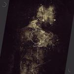

Music Reviews
-
CHVRCHES Recover EP
The Glaswegian outfit's debut can be best described as synth-pop, maybe electro-pop, but definitely and inexplicably not derivative of the 80s style they’ve magically transformed.
Gabbie Nirenburg reviews... -

Various Artists Way To Blue - The Songs of Nick Drake
Go ahead Mr. Purist, I dare you not to like it.
Alan Shulman reviews... -

Julian Lynch Lines
The experimental-leaning New Jersey native embraces ambient folk compositions while continuing to flesh out the improvisational pulse of jazz.
Juan Edgardo Rodríguez reviews... -

Golden Grrrls Golden Grrrls
The Glaswegian bedroom trio step into a jangly, out of key debut that epitomizes twee and indie pop.
Gabbie Nirenburg reviews... -

Ensemble Pearl Ensemble Pearl
Members of Sunn O))), Boris, The Sweet Hereafter and Ghost consider Earth’s millennial progressions and try them on for size, volume and density.
Sean Caldwell reviews... -

Indians Somewhere Else
Synth-pop and Indie-folk meet on the debut from Danish group Indians.
David John Wood wishes he was somewhere else... -
Fear of Men Early Fragments
How do you sound bored without sounding bored?
Alan Shulman reviews -
Black Rebel Motorcycle Club Specter at the Feast
Black Rebel Motorcycle Club are back with their 7th LP, and although the band's blueprint remains the same, there's a definite air of sophistication to the textured, blues-rock nucleus.
Carl Purvis reviews... -
Alex Calder Time EP
Captured Tracks' latest ethereal asset arrives in the shape of former Mac DeMarco collaborator, Alex Calder. His fusion of all things psychedelic and groove-led places him high amongst his esteemed label colleagues. But what exactly does Time's intangibility amount to?
Matt Bevington reviews... -

Justin Timberlake The 20/20 Experience
The American pop mega superstar's follow-up to FutureSex/LoveSounds is one bloated, over-hyped seduction attempt after another.
Gabbie Nirenburg reviews...